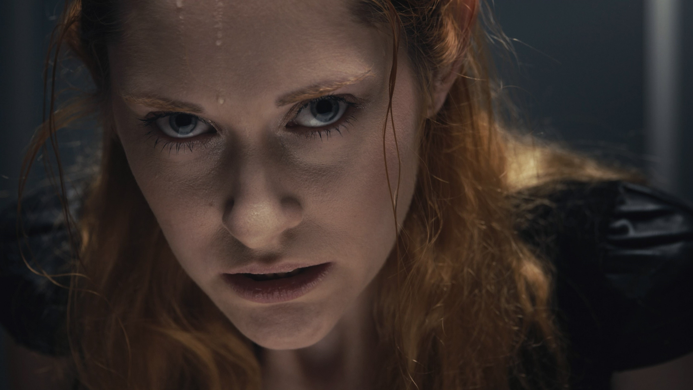
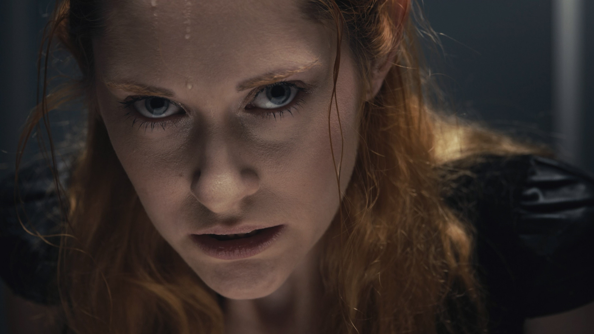

Elmäx
Life on Mars
Life on Mars ist der gesellschaftskritische Song des Berliner Rappers Elmäx, in dem es darum geht, dass uns auch ein „Life on Mars“ nicht mehr retten kann. Nur für die Reichen, die sich in der egoistischen, kapitalistischen Welt zu behaupten wissen, gibt es überhaupt noch eine Chance auf Zukunft.
Diesen Grundgedanken haben wir in einem etwas abstrahierten Setting aufgegriffen und auf ein Gewinnspiel für eine Reise zum Mars übertragen. Menschen aus allen Gesellschaftsschichten spielen „Reise nach Jerusalem“, um sich diesen Platz zu sichern. Als die ersten Teilnehmer disqualifiziert werden, wird alles immer brutaler, bis nur noch ein Teilnehmer übrig ist. Die Gewinnerin reißt schließlich zum Mars, doch muss feststellen, dass sie dort völlig allein ist.
Der Grundstein dieser Arbeit wurde in meinem 3. Semester Film an der TH Nürnberg gelegt, in dem wir ein Konzept für ein Musikvideo erarbeiten sollten. Nach einer dreisemestrigen Drehpause sollte endlich wieder real gedreht werden dürfen, doch leider wurde auch in diesem Semester der Dreh abgesagt. So hatten wir nur einige Konzepte und viele Kontakte zu Künstler*innen, jedoch kein fertiges Musikvideo.
Als die Restriktionen im Frühjahr wieder etwas lockerer wurden beschlossen wir, das Projekt trotzdem selbstständig umzusetzen und so drehten wir im April nach etwa einmonatiger, intensiver Vorarbeit und enger Zusammenarbeit mit dem Künstler das Musikvideo mit insgesamt 10 Darstellern und 15 Crewmitgliedern.
BTS / Standbilder


 
